Top 50 Albums Of 2013 (Part One)
We know we've kept you waiting this year, and for that we are truly sorry. There is perhaps a slight danger that you'll be bored to death of end of year lists by the time you feast your eyes upon ours. Hopefully the following selections will provide enough surprise inclusions, bring to mind enough heavyweight omissions, and generally stir up sufficient feelings of intrigue and despair to make the whole journey worthwhile. If so, mission accomplished. If not, we hope you'll at least agree that these fifty picks provide a pretty solid argument for 2013 being another good year for music. But let's be honest: they all are if you're prepared to look hard enough.
The top 25 will be published tomorrow, following which we'll be taking a break until early January. If all goes well, the first quarter of 2014 should see the arrival of a brand new No Ripcord in preparation for our 15th birthday celebrations next April. Thanks for reading in 2013. (David Coleman, Editor-in-Chief)
. . .
50. Iceage
You're Nothing
(Matador)
When Iceage released their superb 2011 debut, New Brigade, they were merely a bunch of young, nihilistic rabble rousers with a penchant for dissonant composition and bloody live shows. Now, over two years later, Iceage have proven they're nearly a different band – one capable of writing brilliant songs that are more than just displays of raw atmospherics and brutality. They've honed their exceptional sense of classic punk songwriting, but haven’t lost any of their very modern edge – the band sounds enormous, the hooks are clear and concise, and the sheer aggressive presence of vocalist Elias Rønnenfelt is more poignant than ever. On You're Nothing, the band has found a way to focus their compositional skills without losing any of their power, combining chaos and melody into one cohesive experience that begs for multiple listens. (Andrew Ciraulo)
49. Thee Oh Sees
Floating Coffin
(Castle Face)
Fangs, strawberries and one of the year’s best riffs (because Toe Cutter-Thumb Buster rules), Thee Oh Sees put out Floating Coffin, garage-spawned psych rock excellence bolstered by harmonized falsettos, raucous playing and occasional leaps into the musically bizarre. As John Dwyer’s enthusiastic fingers run across the frets during album opener I Come From the Mountain, the colorful tone of an age that earned San Francisco its legacy as the psychedelic rock mecca of the late 60s is heavily incorporated in Thee Oh Sees’ make-up. That being said, Floating Coffin is not a throwback or disingenuous homage. Without discounting the essence of 60s garage rock or the spiritedness of independent rock music, Thee Oh Sees find a balance, cultivating a very primal, artful and fun listen that happily tells nostalgia to fuck off. (Sean Caldwell)
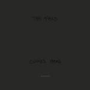48. The Field
Cupid's Head
(Kompakt)
Axel Willner’s mesmerizing reations as The Field have always warranted comparisons to shoegaze, but with Cupid’s Head, his latest looping tapestry, Willner has finally made a true-blue shoegaze album. No, Willner didn’t sell his laptop to buy guitars – this is still the same looping minimal techno he’s always been perfect at – but Cupid’s Head is easily the densest and most otherworldly album he’s released, sporting a robust live sound that gives tracks like the hiccupping title track and the intensely physical No. No... enough force to fill cathedral ceilings. Sure these six tracks can loop for nearly ten minutes with few diversions, but each track, from the love-struck psychedelia of A Guided Tour to the distorted wash of 20 Seconds of Affection, is packed with such detail that each listen gives you a new sound, or micro sound, or even completely imagined sound, to lock on to. (Peter Quinton)
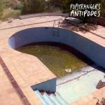47. Popstrangers
Antipodes
(Carpark)
New Zealand has proved to be somewhat of a goldmine for guitar music over the past year or so, and Popstrangers are one of the latest in a very promising line of Australasian exports. This isn’t a bread and butter guitar band, though; concoctions of distorted guitars that avoid sounding overbearing share a melting pot with smearing, noxious licks, catchy compromises and a smorgasbord of influences, and it’s nothing less than a calculated, spiky assault from the moment the toxic sprawl of Jane infects your headphones. With Antipodes, Popstrangers have shown themselves perfectly happy to experiment with the fine science of balancing quiet and loud, bringing together an abundance of genres and sounding like none of them. The result? A band that is delightfully impossible to pigeonhole, an immense sense of intrigue and a superb debut album. (Carl Purvis)
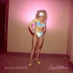46. Blood Orange
Cupid Deluxe
(Domino)
As if to confirm the suspicions of the naysayers who said that “chillwave” was just 80s pop made by people who were either too cool or too lazy to write proper songs, Blood Orange (aka Dev Hynes, aka Lightspeed Champion, aka that bloke from Test Icicles) has made his project’s first record, 2011’s Coastal Grooves, look like a set of rough sketches in comparison. Building on the successes of his gorgeous collaborations with Solange Knowles and Sky Ferreira, Hynes finally seems to be making the music he was born to make: his knack for an ear-candy guitar riff or a sun-soaked synth setting makes it clear he’s a natural at hitting that R&B / synth-pop sweet spot. It’s nostalgic in the true sense of the word, it’s bittersweet. The finest of Hynes’ after-party slow-jams leave you filled with melancholic awe. (Stephen Wragg)
45. Tegan and Sara
Heartthrob
(Warner Bros.)
Given the precarious financial state of the music industry, “selling out” isn’t what it used to be. Once possibly the worst insult that could be hurled at an artist, now it’s an accepted fact that few can afford to stick to such luxuries as principles. On the plus side, a number of ‘credible’ acts have willingly embraced the idea of commercial appeal and run with it. In discussing the thinking process behind their seventh album, twin sisters Tegan and Sara risked coming across far more calculated than creative. However, in keeping the qualities that defined many of their earlier songs – such as the glossy harmonies and the concise run times – and changing their working practices (it’s the first album where the fiercely independent sisters’ songwriting seemed conjoined), Heartthrob delivered ten absolutely terrific synth pop tracks, each one feeling both emotionally direct and like a potential radio hit. (Mark Davison)
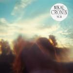44. Mikal Cronin
MCII
(Merge)
Every year we praise artists for breaking new ground, for innovating, even for curating in a particularly imaginative way. Sometimes, though, the most satisfying releases are the ones that stick to the well worn paths, keeping things simple and reassuringly familiar. It's a brave approach in 2013, and any album adopting it will live or die on the strength of the songs. Fortunately, MCII is comprised of ten beautifully realised pop-rock songs, which are not only capable of standing out on first listen, but also crucially of standing up to repeat inspections. In delivering the perfect soundtrack to a glorious summer, Mikal Cronin announced his arrival as a major songwriting talent. (David Coleman)
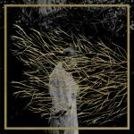43. Forest Swords
Engravings
(Tri-Angle)
Engravings is all about atmosphere, texture, feeling, a mood. It is not about meaning, or indeed language – it is somewhere beyond language. On the face of it, Forest Swords operates within the field of contemporary electronica. But they (or rather he) stands out by virtue of a humanistic warmth that belies the sparseness of the arrangements. The beats are languid, they slide across the music rather than keep a regimented pulse of time. The samples are by turns reassuring and sinister, and the musical reference points span ages like a time traveller, picking up trinkets and keepsakes to add to the collection. The overall impression is one of dream-like fluidity. This album, more so than any other this year, crosses boundaries to stunning effect. (David Wood)
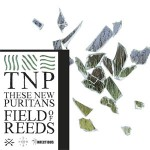42. These New Puritans
Field of Reeds
(Infectious)
In a year in which the pop landscape unanimously championed experimental forms of expression, Southend act These New Puritans took the non-committal path in an effort to separate themselves even further from accessibility. There’s a dramatic shift in Field of Reeds from their past two efforts, but they’ve been slowly building towards this evolution with fair warning – there’s the tinges of percussive murk in Beat Pyramid and the doomed choral flourishes in Hidden that hint at the bleak totality of Field of Reeds. But there’s much risk involved in choosing to present a complex body of work that aspires to be considered in the classical realm, especially coming from the one act that managed to survive the dissolution of the post-punk revival with heaps of praise. These New Puritans prevailed because they had foresight of what would’ve been their eventual demise, and opted to stand out with a wholly abstruse effort that is still sinking into the ears of their audience. Field of Reeds wants to provoke you – whether it’s through a horrid heap of off-pitch vocals, almost quiescent instrumental passages, and mournful horn accents. It is a work of startling imagination and sheer beauty, and one that will eventually earn its rightful place among other intangible works of art (Laughing Stock, Pygmalion) in the ensuing years. (Juan Edgardo Rodriguez)
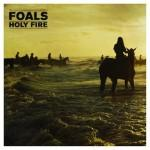41. Foals
Holy Fire
(Transgressive / Warner Bros.)
By the time Holy Fire’s sumptuous centrepiece Late Night unequivocally captures your heart, you’ve already been placed firmly on the road to adoration. Wooed by the mysterious elegance of Prelude, excited and thrilled like a giggling teenager by singles Inhaler and the poppy My Number, swept off your feet by the majestic anthem Bad Habit and then sent floating into the clouds by the upbeat simplicity of Everytime, Late Night then works its hauntingly beautiful magic. What’s just happened is the beginning of a long love affair with Foals most mature, most downright brilliant offering yet, an album that you will cherish for years to come. And the second half isn’t bad either. Buy it, steal it, borrow it and don’t ever return it – but own it somehow...and fall in love. (Graeme Marsh)
 40. Justin Timberlake
40. Justin Timberlake
The 20/20 Experience
(RCA)
Classy, sexy, modern and most of all, fun, Justin Timberlake graced music listeners in 2013 with a refreshing musical homage to the joys of love, sex and good times. Unapologetically packed with 7 to 8-minute jams full of crunching beats, soul grooves and Timberlake’s trademark velvet falsetto, The 20/20 Experience sought to please everyone in all the right ways. As an artist Timberlake has evolved since his FutureSex/LoveSounds days, but the unashamed commitment to entertain remains. That, coupled with his increasingly dynamic partnership with co-producer Timbaland, is what drives the jazzy throb of Pusher Love Girl, inspires the satisfying catchiness of Mirrors, and excuses the tongue-in-cheek horniness of Suit & Tie. In a year with too much Robin Thicke, it takes a record like this to keep the champagne bubbling, the ladies pleased and the boom boxes in constant thump. (Luiza Lodder)
39. Torres
Torres
(Self-released)
The affable singer-songwriter has become a fixture in your typical bourgeois coffee venue – a prim voice who performs with a general upbeat demeanor to wash away her emotional despair. Leave it to 22 year old Torres, the nom de plume of Georgia native MacKenzie Scott, to put that notion to shame with her profoundly astute self-titled debut, approaching a narrative that’s affected with a nakedness that can’t be taught. She overcomes her defenses with a mighty force, yet her bare electric guitar compositions seek the warmth of empathy instead of assaulting one with a fiery feminist bite. It’s not as austere as it implies – the songs are cloaked with subtle atmospheric textures, interspersed with searing strings that release all that pent up tension. But she’s a storyteller above all else, one who acutely reflects a deep sense of vexation when exploring the fire within unstable relationships. Torres demands your attention with an unsentimental authenticity that resounds throughout, and marks the emergence of a budding new talent. (Juan Edgardo Rodriguez)
38. Chance The Rapper
Acid Rap
(Self-released)
Every year there’s a word of mouth mixtape that slips the surly bonds of datpiff.com and touches the face of God. Obviously, by God I mean Kanye West and for anyone annoyed by his post-Graduation musical direction, try Acid Rap. Grounded in the same Chicago Soul and gospel music, Chance added nostalgia and drugs to create a joyous, bouncing record. Sometimes mellow, often exuberant, get ready to smile at tracks like Favourite Song and Cocoa Butter Kisses. Even the interludes are jubilant; That’s Love is backed by gospel organs, Good Ass Intro by chaotic trumpets. Sometimes you need that party album where the singer’s signature adlib is to go “na nana na na na na” and you can sing along to a song that goes “This my jam, this my jam, this my jam, this my jam I'm 'bout that jam, I'm 'bout that jam, I'm 'bout that jam, I'm 'bout that jam.” (James McKenna)
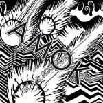37. Atoms For Peace
Amok
(XL)
The term "supergroup" can lead to dangerous expectations, where the project has to equal or exceed all of the individual members' previous work. Amok is not that experience. Instead, it's the sound of five friends coming together to knock out some music in a couple of weeks. Of course, those friends are Thom Yorke, Flea, Nigel Godrich, Joey Waronker and Mauro Refosco, resulting in an exciting, groove-filled record that picks up where The Eraser and The King of Limbs left off. Ranging from the electronica of Default to the atmospherically-laden guitar work of Judge, Jury and Executioner, the songs have a rave slant, but they don't spiral off into sounding like remixes. Yorke's voice is in top form, his ghostly wail making tracks like Before Your Very Eyes... and Ingenue beautiful and haunting at the same time. Not bad for a debut album! (Joe Marvilli)
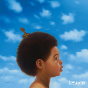36. Drake
Nothing Was the Same
(Cash Money / Young Money / Universal Republic)
"This is nothing for the radio, but they’ll still play it though / ‘Cause it’s that new Drizzy Drake, that’s just the way it go." Drake might have jumped the gun a bit on this claim during Tuscan Leather, but it’s hard to deny the merits of Nothing Was the Same – an album that doubles as a truly unique and fully realized artistic statement AND a hit album. Credit is largely due to producer 40, whose dreamy, amorphous beats on tracks like Furthest Thing and From Time keep the album threaded tightly together, but this is still Drake’s vision through and through, with his musings on success, regrets, and lost love vividly coloring the album. Some might be turned off by Drake’s passive aggressive tantrums, but at the record’s heart lies a sentiment almost anyone can identify with: I’m just tryna connect with somethin’, babe. Leave it to Drake to make the best emo record of 2013. (Peter Quinton)
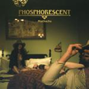35. Phosphorescent
Muchacho
(Dead Oceans)
Matthew Houck’s sixth full-length album under the Phosphorescent moniker proved to be his best yet. Written in the weary wake of a lengthy tour, he mixed the urban isolation of his Brooklyn base with the local sounds and flavors experienced while “checked out” on hiatus in Tulum, Mexico. The result was a stark, often melancholic, and always densely atmospheric trek through desolate Southwestern soundscapes. Between sunrises, Houck wrestled his Quotidian Beasts, spun strings into a hauntingly enchanting Song for Zula, and confronted the New Anhedonia that undermined his resolve to even attempt the album in the first place. Frailty, remorse, and redemption were dominant themes, expressed personally and intimately through a voice as weathered and cracked as its lyrics implied. “Fix myself up, come and be with you,” Houck pledged hopefully on Muchacho’s Tune. Because he did, fans old and new received this dusty gem of an album bound to be one of 2013’s best. (Ben Jones)
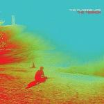34. The Flaming Lips
The Terror
(Warner Bros.)
In retrospect, it seems pretty obvious that The Flaming Lips would pare down their sound to little more than a series of synthesized drones after the sheer bombast of Embryonic and the sonically crowded Flaming Lips And Heady Fwends. Truly, this has almost become a cyclical habit for the Lips – every decade, they reach the absolute limit of a particular sound and thus purge it, usually in a rather shocking display. The Soft Bulletin was certainly that way, exchanging guitars and escapist lyrics for synthesized orchestras and uplifting existentialism. However, this time around it’s notably that same effervescent sense of optimism that got the axe. And for most listeners, that alone marks the end of an era. Indeed, The Terror is definitely a buzz kill, but it does so with purpose. It recognizes that the human experience is full of low moments and gives us a safe, but nonetheless real way to work out those emotions. (Andrew Ciraulo)
33. Yo La Tengo
Fade
(Matador)
One of the year's first great releases, Yo La Tengo's perfectly formed Fade still packs a punch eleven months after it surfaced. Yo La Tengo had always been a band I respected rather than loved; a smart outfit, rather than a truly thrilling one. Propelled by the stellar seven minute opener Ohm, Fade corrected this bizarre anomaly. A perfect fat-free distillation of everything that has worked for Yo La Tengo across a distinguished thirty year career, this hints at further riches to come from Hoboken's finest. (David Coleman)
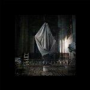32. Tim Hecker
Virgins
(Kranky)
Tim Hecker is likely the most consistent electronic artist out there today, and not just consistently good but consistently excellent. It’s not easy to get drone right, but once again he achieves exactly that with his 7th studio album Virgins. It’s the kind of album that makes you question yourself at times, his unmistakable sound with its hazy dread and melodies hidden in the mist once again returning to haunt you. Sonically it seems a tad heavier and harsher than its predecessor Ravedeath, 1972, with instruments sounding more defined and identifiable from their counterparts, likely due to Hecker’s use of orchestral musicians for the recording. Black Refraction's graceful repeated piano motif and the tribal sounding Stigmata II, which at times harks back to Four Tet’s early work, are my personal favourites here on a very strong album indeed, and one that trumps collaborator Oneohtrix Point Never’s glitchy 2013 offering R Plus Seven. (Richard Petty)
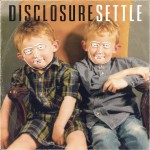31. Disclosure
Settle
(PMR / Island)
2013 was a good year for mainstream dance music, with Duke Dumont, Daft Punk and Rudimental all playing a part in bringing some much-needed soul and intelligence back. To varying degrees, each of their sounds was a freshened-up mutation of past styles that pushed dance music into the 'now'. This also applies to sibling duo, Disclosure, whose blend of deep house and UK garage gave dance fans a welcome respite from the dubstep and derivative EDM that have dominated the scene for the past few years. Brimming with possible singles, including the monster hit White Noise, Settle helped to future proof house music while giving a knowing nod to its past. Throw in guest vocals from Friendly Fires's Ed McFarlane, soul diva Jessie Ware and the ethereal vocals of Hannah Reid (from London Grammar) and the result is one of the albums of the year. (Gary McGinley)
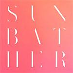30. Deafheaven
Sunbather
(Deathwish)
Deafheaven is hardly the first metal band to crossover to non-metal audiences (much to the purist’s dismay), but at times this year, it sure felt like it. With so much discussion on both sides of the fence regarding Deafheaven’s rise, it seemed like it was impossible not to have an opinion on the group in 2013. But despite all the chatter surrounding their influences, their blogger-friendly demeanor, their pink album cover, or their “legitimacy” as a black metal band, nothing could hope to drown out the raging nucleus at the center of it all – the blinding eye of the storm that proved to be more powerful and dizzying than the hurricane framing it: Sunbather. Time will tell if Sunbather was indeed the “watershed” moment for black metal many praised it as, but what’s undeniable is that few artists in any genre this year dared to dream this big. (Peter Quinton)
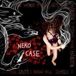29. Neko Case
The Worse Things Get...
(Anti-)
Neko Case’s first album since 2009’s fantastic Middle Cyclone was a personal and intimate affair, but that didn’t mean that she didn’t let loose once in a while. In fact, the immediate stand-out cut, Man, might just be one of the most raucous tracks she’s ever written, all distortion-heavy riffing and lyrical barbs. Elsewhere, stories unfold and Case opens up in a way that few other artists are able to, bravely baring her soul over delicate pedal steel and gentle acoustic guitar. None of this represents a significant departure, but her songwriting is so strong and expertly judged, it truly rewards repeat listening. The Worse Things Get... has been nominated for a Grammy and it’s not hard to see why – Neko Case is the closest thing we have to a 21st Century Joni Mitchell. (Joe Rivers)
28. Danny Brown
Old
(Fool's Gold)
He may be an OAP compared to some of his peers, but in terms of hip-hop albums this year none have bettered him. This is Brown’s well deserved victory lap, and one that he has achieved admirably by not compromising his principles for fame. Once again there’s many paeans and witty euphemisms for cunnilingus present in his lyrics but also touching flashbacks to youth such as in the skippy Wonderbread. It’s not just an album that’s great lyrically; the production is on point too. Regular collaborators SKYWLKR and Paul White’s work is faultless, especially White’s beautiful Lonely and SKYWLKR’s MDMA anthem Dip, as hard as anything I’ve heard this year. Old is an album structured into two halves, but both are consistently excellent and it’s down to personal preference which your favourite will be. Basically, if there’s any hip-hop album from 2013 that you should sink your teeth into (sorry Danny), it’s this one. (Richard Petty)
27. Deerhunter
Monomania
(4AD)
Raw would be a good way to put it. On their fifth studio album, Deerhunter made a departure from their dreamy, atmospheric post-punk / indie rock, in favor of a more basic structure. Monomania resulted in a looser, grittier sound compared to pervious works, a style that front-man Brandon Cox has titled “nocturnal garage.” Despite removing some of the glimmer and gloss of Mircocastle or Halcyon Digest, Monomania retains much of Cox’s signature approach to songwriting; a balance between chaos and beauty. It mimics more of the feel of a live show, than a studio album. On the album’s title track (Monomania), Cox’s horsed vocals during the chorus, layered over a vicious noise jam, perfectly captures Cox’s explosive and haunting stage presence. (Carlos Villareal)
26. Jenny Hval
Innocence is Kinky
(Rune Grammafon)
How does one follow an album that begins “I arrived in town with an electric toothbrush pressed against my clitoris”? In Jenny Hval’s case, it’s by starting the next one with “at night I watch people fucking on my computer.” If those lyrics make you uncomfortable, that’s the point. But Hval has more than lyrical bluntness going for her: Innocence Is Kinky is overflowing with genuinely artful use of guitar. There’s dark melodic riff like the one that follows the above lyric and intense bursts of noise that drop suddenly in and out of I Called and Give Me That Sound. Think Velvet Underground’s The Gift, the no-wave of Sonic Youth, and the experimental works of Patti Smith, but with passages of beautiful, luscious textures as counterpoint. It’s also densely packed with literary allusions, shifts between spoken word and sustained, upper register singing, and might be a mini-concept album about Joan of Arc. This one forces you to return to it. (Forrest Cardamenis)
. . .
The concluding part of our Top 50 will be published tomorrow. We know we've kept you waiting this year, but hopefully the delay will be worth it.
23 December, 2013 - 08:55 — No Ripcord Staff